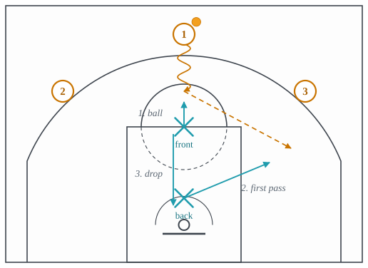

4.1: Transition Defense
Chapter 4: Defense
Lecture 3.1 ended by calling every transition advantage a deadline: the numbers last until the defense is back, the empty rim lasts until the big is home, the unguarded trailer lasts until his man arrives. Transition defense is the work of bringing those deadlines forward, and it is unusual among defensive subjects in having almost no scheme to it. There is no coverage to choose. There are three jobs, they come in a fixed order, and the order is the whole lesson.
The order is rim, ball, match up. First the paint is protected, so the shot the offense cannot get is the layup. Then the ball is stopped, so the break slows to a walk. Only then does each defender find a man. Every transition breakdown a coach shows on film is one of these done out of order: a defender who ran to his man while the rim was empty, or a defender who found a body while nobody had the ball.
This lecture takes the three jobs in that order. Section 1 is the rim, Section 2 is the ball, Section 3 is the outnumbered case where both have to be done by two players, and Section 4 is matching up. Section 5 goes back before the shot, to the decisions a defense makes while it is still on offense. Section 6 is the take foul, and what the rule book did to it. Each coverage is set out in a card with four slots, and each card’s last slot names the action from lecture 3.1 that is built to beat it.
1 Protect the rim first
The first defenders back do not run to a man. They run to the paint. This is the rule behind protect the rim first, and it exists because of how the shots the offense might take rank. A layup is the shot transition produces most and the shot it produces most efficiently, and a defender who runs to a wing while the paint is empty has taken away a corner three and conceded a dunk. Sprinting to the paint takes the layup away, and every other shot is then closed out to from the inside (Figure 1).

The phrase a coach uses for this is no layups, and it is a rule chosen for a tired player. A defender sprinting back at full speed cannot process where five attackers are. He can process one instruction, and the instruction is: paint. When he gets there he looks up, and only then does he pick a shooter to close out to. The order costs a beat on the perimeter and buys the rim, and the rim is worth more.
Two refinements follow. The first is that defenders load to the ball as they retreat: they shade toward the side the ball is on, so the ball-handler sees bodies in front of him and the far side of the floor is the last thing the defense worries about. The ball scores; the far corner has to be passed to first, and a long cross-court pass is the pass a retreating defense can most afford to allow. The second is that the first big back goes to the rim regardless of who he is guarding. If the opposing big has beaten him down the floor, that is a problem for the match-up in Section 4, not a reason to leave the paint.
- Assignment
- The first two defenders back sprint to the paint, below the ball, and stop the layup. They close out to shooters only after the paint is protected.
- Concedes
- The first open three, usually to a wing who stopped at the arc. This is a deliberate trade.
- Requires
- Effort and one rule. No reading is needed, which is the point.
- Beaten by
- Running the lanes with a corner fill, which puts shooters exactly where the paint-first defender has to leave them, and the transition three that follows.
2 Stop the ball
A ball-handler at full speed is a problem for the whole defense, because every defender behind him is back-pedalling and every decision they make is made a second late. Stopping the ball is one defender meeting the ball-handler early enough that he has to slow down, and the value is not in the stop itself but in the seconds it gives the four players behind.
Where the ball is met is the pick-up point, and it is a choice. A defense that picks the ball up at the free-throw line extended in the back court slows the break earlier but leaves that defender further from the paint if he is beaten. A defense that picks it up at the top of the key in the front court gives up the early dribble but keeps its shape. The choice is made by personnel: a team with a rim protector it trusts picks up higher, because a beaten defender is not the end of the possession. A team without one picks up lower and keeps its bodies in the paint.
The defender who takes the ball says so. The one word of communication that transition defense cannot do without is the one that tells the other four that the ball is handled, because the second job is done only once and a defense with two players on the ball has three on the other four.
- Assignment
- One defender, usually the nearest guard, meets the ball-handler at the pick-up point and turns him, calling it so nobody else comes.
- Concedes
- The pass. The ball-handler who is stopped will look to move the ball, and the defense is betting that the receivers are covered by Section 1.
- Requires
- A defender who can slow a guard at speed without fouling, and a pick-up point the whole team agrees on.
- Beaten by
- The hit-ahead pass, which moves the ball past the pick-up point before the pick-up defender has arrived, and the push by pass rather than by dribble.
3 Outnumbered
When two defenders face three attackers, or one faces two, the two jobs above have to be done by the same players, and there is a shape for that. It is tandem defense, and the shape is a line, not a row (Figure 2).

Two defenders side by side leave the middle open, and the ball-handler from lecture 3.1 goes straight down it. Two defenders in a line, one at the free-throw line and one near the rim, present the ball-handler with a defender in front of him and a defender behind that one. The front man stops the ball. When the ball is passed to a wing, the back man goes to the receiver, and the front man drops to the rim to take the back man’s place. Then, if the ball is passed again, they rotate again. The wing pass is conceded; the layup is not, and neither is the drive down the middle.
The tandem holds until help arrives, and it is a delaying action rather than a solution. What it prevents is the outcome the numbers break is designed for: a defender who steps to the ball with nobody behind him.
- Assignment
- The two defenders form a line in the middle. Front takes the ball; back takes the first pass; front drops to the rim; repeat until the third defender arrives.
- Concedes
- A wing jumper, and the second pass if it is fast enough.
- Requires
- Two defenders who know which of them is front, decided by who arrives first and never argued about.
- Beaten by
- The numbers advantage used patiently: the ball stays in the middle, the wings stay wide, and the ball swings twice faster than the tandem can rotate.
4 Match up
Once the rim is protected and the ball is stopped, the break is over and the defense has a possession to defend. It still has no assignments. The third job is matching up, and the rule for it is the one a tired player can follow: take the nearest unguarded attacker, whoever he is, and say his number. A defender who runs past an open attacker to find his own man has left a shooter open for the time it takes to get there, and in transition that time is a shot.
The consequence is that transition match-ups are often wrong by design. A wing ends up on a big; a big ends up on a guard. This is a cross-match, and it is sometimes deliberate: when the offensive big has beaten the defensive big down the floor, the nearest wing takes him at the rim rather than leaving him alone, and the defensive big, arriving last, takes whichever perimeter player is free. The defense has bought a protected rim at the cost of a size mismatch on the perimeter.
What the defense does about that mismatch is the subject of lecture 4.5, where the scram switch is the tool for getting a small defender out of the post and a big one in. For now the rule is simpler: fix the match-up on the next pass, not this one. A defense that tries to sort its assignments while the ball is live has stopped guarding to talk.
- Assignment
- Each defender takes the nearest unguarded attacker and calls the number. Mismatches are accepted now and fixed on the next pass.
- Concedes
- A mismatch somewhere on the floor, usually a small guard on a big or a big on a guard.
- Requires
- Talk. Five players who each say one number, once.
- Beaten by
- An offense that finds the mismatch before the defense fixes it: the early seal by a big on a small defender, or a guard attacking a big on the perimeter before the scram switch can happen.
5 Before the shot goes up
Most of transition defense is decided before the possession changes, while the team is still on offense. The question is who goes to the offensive glass and who retreats, and it is the mirror of the crash or get back decision from lecture 3.1. Every player sent to the glass is a rebound the team might win and a defender it will not have. The rule most teams adopt is floor balance: one or two designated players, usually the guards and usually the ones furthest from the rim when the shot goes up, retreat as the shot is released, whatever happens to it. They are the first defenders back in Section 1, and they are back because they never went.
One glossary names a rule that sits between the two: tag up, in which every offensive player, as the shot goes up, matches up with the defender boxing him out and stays between that player and the basket, so that the team still contests the offensive rebound and is already matched when the rebound is lost. It is described by one publisher only, so under this site’s rule it has no entry until a second names it (plan/PLAN.md, section 8.4).
The other thing a defense can do before the break starts is make it start late. Jamming the rebounder is the nearest player staying on the defensive rebounder as he lands, with a hand up in the passing lane, and the next player denying the outlet man on the sideline. The outlet is thrown a second late, or thrown to the middle, or not thrown. A break that starts a second late meets the defense from Section 1 already in the paint, and the whole of lecture 3.1’s first three seconds have been taken away before the first dribble.
6 The take foul, and what the rule book did to it
For a long time there was a fourth job available, cheaper than the other three. If the break could not be stopped, a defender could foul the ball-handler early, before the numbers advantage was used, and trade the breakaway for two free throws and a set defense behind them. This is the transition take foul. Teams did it because they judged two free throws, which can be missed, a better outcome than an uncontested layup, and because the foul bought the time to get all five defenders back for whatever followed.
The NBA changed the trade. Beginning with the 2022-23 season, the penalty is listed in two bullets: “The offensive team will be awarded one free throw, which may be attempted by any player on the offensive team in the game at the time that the foul is committed.” and “The offensive team will retain possession of the ball.”1 The foul now costs the defense a free throw and the possession it was trying to save, so the trade it was making no longer exists. The card below shows the coverage as a diff of itself, before and after, in the way a second model is shown as a change to the first.
- Assignment
- A defender fouls the ball-handler early in the break, before the numbers advantage is used.
- Concedes
- Two free throws, then a set defense. One free throw, taken by the best shooter on the floor, and the offense keeps the ball.
- Requires
- Nothing but the decision. A reason to give up a free throw and the ball to prevent one shot, which is hard to find.
- Beaten by
- Nothing on the floor. The rule.
The idea to carry into lecture 4.2 is that the three jobs do not end when the ball is stopped. The defense that has protected the rim, stopped the ball and matched up is back, but it is back badly: cross-matched, with its big still arriving and its assignments improvised. Early offense is the offense’s attack on exactly that state, and it starts with the one player the defense in Section 4 could not account for, the trailer stepping into a ball screen. The next lecture is about guarding him.
Footnotes
NBA, “NBA Board of Governors approves heightened penalty for ‘transition take foul’”, NBA.com, 13 July 2022, https://www.nba.com/news/nba-board-of-governors-approves-heightened-penalty-for-transition-take-foul, retrieved 2026-09-17. Verbatim: “Beginning with the 2022-23 NBA season”, the penalty is listed in two bullets, “The offensive team will be awarded one free throw, which may be attempted by any player on the offensive team in the game at the time that the foul is committed.” and “The offensive team will retain possession of the ball.” Saved as
nba-2022-take-foulin the source registry, 2026-09-21. No claim is made here about how often the old trade paid off; that would need free-throw and breakaway conversion rates with a source, and none is cited.↩︎